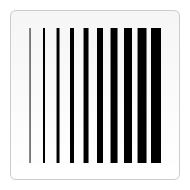
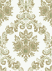

In the chapter about drawing shapes, we used only the default line and fill styles. Here we will explore the canvas options we have at our disposal to make our drawings a little more attractive. You will learn how to add different colors, line styles, gradients, patterns and shadows to your drawings.
Colors
Up until now we have only seen methods of the drawing context. If we want to apply colors to a shape, there are two important properties we can use: fillStyle and strokeStyle.
fillStyle = color- Sets the style used when filling shapes.
strokeStyle = color- Sets the style for shapes' outlines.
color is a string representing a CSS <color>, a gradient object, or a pattern object. We'll look at gradient and pattern objects later. By default, the stroke and fill color are set to black (CSS color value #000000).
Note: When you set the strokeStyle and/or fillStyle property, the new value becomes the default for all shapes being drawn from then on. For every shape you want in a different color, you will need to reassign the fillStyle or strokeStyle property.
The valid strings you can enter should, according to the specification, be CSS <color> values. Each of the following examples describe the same color.
// these all set the fillStyle to 'orange' ctx.fillStyle = 'orange'; ctx.fillStyle = '#FFA500'; ctx.fillStyle = 'rgb(255, 165, 0)'; ctx.fillStyle = 'rgba(255, 165, 0, 1)';
A fillStyle example
In this example, we once again use two for loops to draw a grid of rectangles, each in a different color. The resulting image should look something like the screenshot. There is nothing too spectacular happening here. We use the two variables i and j to generate a unique RGB color for each square, and only modify the red and green values. The blue channel has a fixed value. By modifying the channels, you can generate all kinds of palettes. By increasing the steps, you can achieve something that looks like the color palettes Photoshop uses.
function draw() {
var ctx = document.getElementById('canvas').getContext('2d');
for (var i = 0; i < 6; i++) {
for (var j = 0; j < 6; j++) {
ctx.fillStyle = 'rgb(' + Math.floor(255 - 42.5 * i) + ', ' +
Math.floor(255 - 42.5 * j) + ', 0)';
ctx.fillRect(j * 25, i * 25, 25, 25);
}
}
}
<canvas id="canvas" width="150" height="150"></canvas>
draw();
The result looks like this:
| Screenshot | Live sample |
|---|---|
 |
A strokeStyle example
This example is similar to the one above, but uses the strokeStyle property to change the colors of the shapes' outlines. We use the arc() method to draw circles instead of squares.
function draw() {
var ctx = document.getElementById('canvas').getContext('2d');
for (var i = 0; i < 6; i++) {
for (var j = 0; j < 6; j++) {
ctx.strokeStyle = 'rgb(0, ' + Math.floor(255 - 42.5 * i) + ', ' +
Math.floor(255 - 42.5 * j) + ')';
ctx.beginPath();
ctx.arc(12.5 + j * 25, 12.5 + i * 25, 10, 0, Math.PI * 2, true);
ctx.stroke();
}
}
}
<canvas id="canvas" width="150" height="150"></canvas>
draw();
The result looks like this:
| Screenshot | Live sample |
|---|---|
Transparency
In addition to drawing opaque shapes to the canvas, we can also draw semi-transparent (or translucent) shapes. This is done by either setting the globalAlpha property or by assigning a semi-transparent color to the stroke and/or fill style.
globalAlpha = transparencyValue- Applies the specified transparency value to all future shapes drawn on the canvas. The value must be between 0.0 (fully transparent) to 1.0 (fully opaque). This value is 1.0 (fully opaque) by default.
The globalAlpha property can be useful if you want to draw a lot of shapes on the canvas with similar transparency, but otherwise it's generally more useful to set the transparency on individual shapes when setting their colors.
Because the strokeStyle and fillStyle properties accept CSS rgba color values, we can use the following notation to assign a transparent color to them.
// Assigning transparent colors to stroke and fill style ctx.strokeStyle = 'rgba(255, 0, 0, 0.5)'; ctx.fillStyle = 'rgba(255, 0, 0, 0.5)';
The rgba() function is similar to the rgb() function but it has one extra parameter. The last parameter sets the transparency value of this particular color. The valid range is again between 0.0 (fully transparent) and 1.0 (fully opaque).
A globalAlpha example
In this example, we'll draw a background of four different colored squares. On top of these, we'll draw a set of semi-transparent circles. The globalAlpha property is set at 0.2 which will be used for all shapes from that point on. Every step in the for loop draws a set of circles with an increasing radius. The final result is a radial gradient. By overlaying ever more circles on top of each other, we effectively reduce the transparency of the circles that have already been drawn. By increasing the step count and in effect drawing more circles, the background would completely disappear from the center of the image.
function draw() {
var ctx = document.getElementById('canvas').getContext('2d');
// draw background
ctx.fillStyle = '#FD0';
ctx.fillRect(0, 0, 75, 75);
ctx.fillStyle = '#6C0';
ctx.fillRect(75, 0, 75, 75);
ctx.fillStyle = '#09F';
ctx.fillRect(0, 75, 75, 75);
ctx.fillStyle = '#F30';
ctx.fillRect(75, 75, 75, 75);
ctx.fillStyle = '#FFF';
// set transparency value
ctx.globalAlpha = 0.2;
// Draw semi transparent circles
for (var i = 0; i < 7; i++) {
ctx.beginPath();
ctx.arc(75, 75, 10 + 10 * i, 0, Math.PI * 2, true);
ctx.fill();
}
}
<canvas id="canvas" width="150" height="150"></canvas>
draw();
| Screenshot | Live sample |
|---|---|
An example using rgba()
In this second example, we do something similar to the one above, but instead of drawing circles on top of each other, I've drawn small rectangles with increasing opacity. Using rgba() gives you a little more control and flexibility because we can set the fill and stroke style individually.
function draw() {
var ctx = document.getElementById('canvas').getContext('2d');
// Draw background
ctx.fillStyle = 'rgb(255, 221, 0)';
ctx.fillRect(0, 0, 150, 37.5);
ctx.fillStyle = 'rgb(102, 204, 0)';
ctx.fillRect(0, 37.5, 150, 37.5);
ctx.fillStyle = 'rgb(0, 153, 255)';
ctx.fillRect(0, 75, 150, 37.5);
ctx.fillStyle = 'rgb(255, 51, 0)';
ctx.fillRect(0, 112.5, 150, 37.5);
// Draw semi transparent rectangles
for (var i = 0; i < 10; i++) {
ctx.fillStyle = 'rgba(255, 255, 255, ' + (i + 1) / 10 + ')';
for (var j = 0; j < 4; j++) {
ctx.fillRect(5 + i * 14, 5 + j * 37.5, 14, 27.5);
}
}
}
<canvas id="canvas" width="150" height="150"></canvas>
draw();
| Screenshot | Live sample |
|---|---|
Line styles
There are several properties which allow us to style lines.
lineWidth = value- Sets the width of lines drawn in the future.
lineCap = type- Sets the appearance of the ends of lines.
lineJoin = type- Sets the appearance of the "corners" where lines meet.
miterLimit = value- Establishes a limit on the miter when two lines join at a sharp angle, to let you control how thick the junction becomes.
getLineDash()- Returns the current line dash pattern array containing an even number of non-negative numbers.
setLineDash(segments)- Sets the current line dash pattern.
lineDashOffset = value- Specifies where to start a dash array on a line.
You'll get a better understanding of what these do by looking at the examples below.
A lineWidth example
This property sets the current line thickness. Values must be positive numbers. By default this value is set to 1.0 units.
The line width is the thickness of the stroke centered on the given path. In other words, the area that's drawn extends to half the line width on either side of the path. Because canvas coordinates do not directly reference pixels, special care must be taken to obtain crisp horizontal and vertical lines.
In the example below, 10 straight lines are drawn with increasing line widths. The line on the far left is 1.0 units wide. However, the leftmost and all other odd-integer-width thickness lines do not appear crisp, because of the path's positioning.
function draw() {
var ctx = document.getElementById('canvas').getContext('2d');
for (var i = 0; i < 10; i++) {
ctx.lineWidth = 1 + i;
ctx.beginPath();
ctx.moveTo(5 + i * 14, 5);
ctx.lineTo(5 + i * 14, 140);
ctx.stroke();
}
}
<canvas id="canvas" width="150" height="150"></canvas>
draw();
| Screenshot | Live sample |
|---|---|
|  |
Obtaining crisp lines requires understanding how paths are stroked. In the images below, the grid represents the canvas coordinate grid. The squares between gridlines are actual on-screen pixels. In the first grid image below, a rectangle from (2,1) to (5,5) is filled. The entire area between them (light red) falls on pixel boundaries, so the resulting filled rectangle will have crisp edges.

If you consider a path from (3,1) to (3,5) with a line thickness of 1.0, you end up with the situation in the second image. The actual area to be filled (dark blue) only extends halfway into the pixels on either side of the path. An approximation of this has to be rendered, which means that those pixels being only partially shaded, and results in the entire area (the light blue and dark blue) being filled in with a color only half as dark as the actual stroke color. This is what happens with the 1.0 width line in the previous example code.
To fix this, you have to be very precise in your path creation. Knowing that a 1.0 width line will extend half a unit to either side of the path, creating the path from (3.5,1) to (3.5,5) results in the situation in the third image—the 1.0 line width ends up completely and precisely filling a single pixel vertical line.
Note: Be aware that in our vertical line example, the Y position still referenced an integer gridline position—if it hadn't, we would see pixels with half coverage at the endpoints (but note also that this behavior depends on the current lineCap style whose default value is butt; you may want to compute consistent strokes with half-pixel coordinates for odd-width lines, by setting the lineCap style to square, so that the outer border of the stroke around the endpoint will be automatically extended to cover the whole pixel exactly).
Note also that only start and final endpoints of a path are affected: if a path is closed with closePath(), there's no start and final endpoint; instead, all endpoints in the path are connected to their attached previous and next segment using the current setting of the lineJoin style, whose default value is miter, with the effect of automatically extending the outer borders of the connected segments to their intersection point, so that the rendered stroke will exactly cover full pixels centered at each endpoint if those connected segments are horizontal and/or vertical). See the next two sections for demonstrations of these additional line styles.
For even-width lines, each half ends up being an integer amount of pixels, so you want a path that is between pixels (that is, (3,1) to (3,5)), instead of down the middle of pixels.
While slightly painful when initially working with scalable 2D graphics, paying attention to the pixel grid and the position of paths ensures that your drawings will look correct regardless of scaling or any other transformations involved. A 1.0-width vertical line drawn at the correct position will become a crisp 2-pixel line when scaled up by 2, and will appear at the correct position.
A lineCap example
The lineCap property determines how the end points of every line are drawn. There are three possible values for this property and those are: butt, round and square. By default this property is set to butt.

butt- The ends of lines are squared off at the endpoints.
round- The ends of lines are rounded.
square- The ends of lines are squared off by adding a box with an equal width and half the height of the line's thickness.
In this example, we'll draw three lines, each with a different value for the lineCap property. I also added two guides to see the exact differences between the three. Each of these lines starts and ends exactly on these guides.
The line on the left uses the default butt option. You'll notice that it's drawn completely flush with the guides. The second is set to use the round option. This adds a semicircle to the end that has a radius half the width of the line. The line on the right uses the square option. This adds a box with an equal width and half the height of the line thickness.
function draw() {
var ctx = document.getElementById('canvas').getContext('2d');
var lineCap = ['butt', 'round', 'square'];
// Draw guides
ctx.strokeStyle = '#09f';
ctx.beginPath();
ctx.moveTo(10, 10);
ctx.lineTo(140, 10);
ctx.moveTo(10, 140);
ctx.lineTo(140, 140);
ctx.stroke();
// Draw lines
ctx.strokeStyle = 'black';
for (var i = 0; i < lineCap.length; i++) {
ctx.lineWidth = 15;
ctx.lineCap = lineCap[i];
ctx.beginPath();
ctx.moveTo(25 + i * 50, 10);
ctx.lineTo(25 + i * 50, 140);
ctx.stroke();
}
}
<canvas id="canvas" width="150" height="150"></canvas>
draw();
| Screenshot | Live sample |
|---|---|
|
A lineJoin example
The lineJoin property determines how two connecting segments (of lines, arcs or curves) with non-zero lengths in a shape are joined together (degenerate segments with zero lengths, whose specified endpoints and control points are exactly at the same position, are skipped).
There are three possible values for this property: round, bevel and miter. By default this property is set to miter. Note that the lineJoin setting has no effect if the two connected segments have the same direction, because no joining area will be added in this case.

round- Rounds off the corners of a shape by filling an additional sector of disc centered at the common endpoint of connected segments. The radius for these rounded corners is equal to half the line width.
bevel- Fills an additional triangular area between the common endpoint of connected segments, and the separate outside rectangular corners of each segment.
miter- Connected segments are joined by extending their outside edges to connect at a single point, with the effect of filling an additional lozenge-shaped area. This setting is effected by the
miterLimitproperty which is explained below.
The example below draws three different paths, demonstrating each of these three lineJoin property settings; the output is shown above.
function draw() {
var ctx = document.getElementById('canvas').getContext('2d');
var lineJoin = ['round', 'bevel', 'miter'];
ctx.lineWidth = 10;
for (var i = 0; i < lineJoin.length; i++) {
ctx.lineJoin = lineJoin[i];
ctx.beginPath();
ctx.moveTo(-5, 5 + i * 40);
ctx.lineTo(35, 45 + i * 40);
ctx.lineTo(75, 5 + i * 40);
ctx.lineTo(115, 45 + i * 40);
ctx.lineTo(155, 5 + i * 40);
ctx.stroke();
}
}
<canvas id="canvas" width="150" height="150"></canvas>
draw();
| Screenshot | Live sample |
|---|---|
|
A demo of the miterLimit property
As you've seen in the previous example, when joining two lines with the miter option, the outside edges of the two joining lines are extended up to the point where they meet. For lines which are at large angles with each other, this point is not far from the inside connection point. However, as the angles between each line decreases, the distance (miter length) between these points increases exponentially.
The miterLimit property determines how far the outside connection point can be placed from the inside connection point. If two lines exceed this value, a bevel join gets drawn instead. Note that the maximum miter length is the product of the line width measured in the current coordinate system, by the value of this miterLimit property (whose default value is 10.0 in the HTML <canvas>), so the miterLimit can be set independently from the current display scale or any affine transforms of paths: it only influences the effectively rendered shape of line edges.
More exactly, the miter limit is the maximum allowed ratio of the extension length (in the HTML canvas, it is measured between the outside corner of the joined edges of the line and the common endpoint of connecting segments specified in the path) to half the line width. It can equivalently be defined as the maximum allowed ratio of the distance between the inside and outside points of jonction of edges, to the total line width. It is then equal to the cosecant of half the minimum inner angle of connecting segments below which no miter join will be rendered, but only a bevel join:
miterLimit= maxmiterLength/lineWidth= 1 / sin ( min θ / 2 )- The default miter limit of 10.0 will strip all miters for sharp angles below about 11 degrees.
- A miter limit equal to √2 ≈ 1.4142136 (rounded up) will strip miters for all acute angles, keeping miter joins only for obtuse or right angles.
- A miter limit equal to 1.0 is valid but will disable all miters.
- Values below 1.0 are invalid for the miter limit.
Here's a little demo in which you can set miterLimit dynamically and see how this effects the shapes on the canvas. The blue lines show where the start and endpoints for each of the lines in the zig-zag pattern are.
If you specify a miterLimit value below 4.2 in this demo, none of the visible corners will join with a miter extension, but only with a small bevel near the blue lines; with a miterLimit above 10, most corners in this demo should join with a miter far away from the blue lines, and whose height is decreasing between corners from left to right because they connect with growing angles; with intermediate values, the corners on the left side will only join with a bevel near the blue lines, and the corners on the right side with a miter extension (also with a decreasing height).
function draw() {
var ctx = document.getElementById('canvas').getContext('2d');
// Clear canvas
ctx.clearRect(0, 0, 150, 150);
// Draw guides
ctx.strokeStyle = '#09f';
ctx.lineWidth = 2;
ctx.strokeRect(-5, 50, 160, 50);
// Set line styles
ctx.strokeStyle = '#000';
ctx.lineWidth = 10;
// check input
if (document.getElementById('miterLimit').value.match(/\d+(\.\d+)?/)) {
ctx.miterLimit = parseFloat(document.getElementById('miterLimit').value);
} else {
alert('Value must be a positive number');
}
// Draw lines
ctx.beginPath();
ctx.moveTo(0, 100);
for (i = 0; i < 24 ; i++) {
var dy = i % 2 == 0 ? 25 : -25;
ctx.lineTo(Math.pow(i, 1.5) * 2, 75 + dy);
}
ctx.stroke();
return false;
}
<table>
<tr>
<td><canvas id="canvas" width="150" height="150"></canvas></td>
<td>Change the <code>miterLimit</code> by entering a new value below and clicking the redraw button.<br><br>
<form onsubmit="return draw();">
<label>Miter limit</label>
<input type="text" size="3" id="miterLimit"/>
<input type="submit" value="Redraw"/>
</form>
</td>
</tr>
</table>
document.getElementById('miterLimit').value = document.getElementById('canvas').getContext('2d').miterLimit;
draw();
| Screenshot | Live sample |
|---|---|
 |
Using line dashes
The setLineDash method and the lineDashOffset property specify the dash pattern for lines. The setLineDash method accepts a list of numbers that specifies distances to alternately draw a line and a gap and the lineDashOffset property sets an offset where to start the pattern.
In this example we are creating a marching ants effect. It is an animation technique often found in selection tools of computer graphics programs. It helps the user to distinguish the selection border from the image background by animating the border. In a later part of this tutorial, you can learn how to do this and other basic animations.
<canvas id="canvas" width="110" height="110"></canvas>
var ctx = document.getElementById('canvas').getContext('2d');
var offset = 0;
function draw() {
ctx.clearRect(0, 0, canvas.width, canvas.height);
ctx.setLineDash([4, 2]);
ctx.lineDashOffset = -offset;
ctx.strokeRect(10, 10, 100, 100);
}
function march() {
offset++;
if (offset > 16) {
offset = 0;
}
draw();
setTimeout(march, 20);
}
march();
| Screenshot | Live sample |
|---|---|
 |
Gradients
Just like any normal drawing program, we can fill and stroke shapes using linear and radial gradients. We create a CanvasGradient object by using one of the following methods. We can then assign this object to the fillStyle or strokeStyle properties.
createLinearGradient(x1, y1, x2, y2)- Creates a linear gradient object with a starting point of (
x1,y1) and an end point of (x2,y2). createRadialGradient(x1, y1, r1, x2, y2, r2)- Creates a radial gradient. The parameters represent two circles, one with its center at (
x1,y1) and a radius ofr1, and the other with its center at (x2,y2) with a radius ofr2.
For example:
var lineargradient = ctx.createLinearGradient(0, 0, 150, 150); var radialgradient = ctx.createRadialGradient(75, 75, 0, 75, 75, 100);
Once we've created a CanvasGradient object we can assign colors to it by using the addColorStop() method.
gradient.addColorStop(position, color)- Creates a new color stop on the
gradientobject. Thepositionis a number between 0.0 and 1.0 and defines the relative position of the color in the gradient, and thecolorargument must be a string representing a CSS<color>, indicating the color the gradient should reach at that offset into the transition.
You can add as many color stops to a gradient as you need. Below is a very simple linear gradient from white to black.
var lineargradient = ctx.createLinearGradient(0, 0, 150, 150); lineargradient.addColorStop(0, 'white'); lineargradient.addColorStop(1, 'black');
A createLinearGradient example
In this example, we'll create two different gradients. As you can see here, both the strokeStyle and fillStyle properties can accept a canvasGradient object as valid input.
function draw() {
var ctx = document.getElementById('canvas').getContext('2d');
// Create gradients
var lingrad = ctx.createLinearGradient(0, 0, 0, 150);
lingrad.addColorStop(0, '#00ABEB');
lingrad.addColorStop(0.5, '#fff');
lingrad.addColorStop(0.5, '#26C000');
lingrad.addColorStop(1, '#fff');
var lingrad2 = ctx.createLinearGradient(0, 50, 0, 95);
lingrad2.addColorStop(0.5, '#000');
lingrad2.addColorStop(1, 'rgba(0, 0, 0, 0)');
// assign gradients to fill and stroke styles
ctx.fillStyle = lingrad;
ctx.strokeStyle = lingrad2;
// draw shapes
ctx.fillRect(10, 10, 130, 130);
ctx.strokeRect(50, 50, 50, 50);
}
<canvas id="canvas" width="150" height="150"></canvas>
draw();
The first is a background gradient. As you can see, we assigned two colors at the same position. You do this to make very sharp color transitions—in this case from white to green. Normally, it doesn't matter in what order you define the color stops, but in this special case, it does significantly. If you keep the assignments in the order you want them to appear, this won't be a problem.
In the second gradient, we didn't assign the starting color (at position 0.0) since it wasn't strictly necessary, because it will automatically assume the color of the next color stop. Therefore, assigning the black color at position 0.5 automatically makes the gradient, from the start to this stop, black.
| Screenshot | Live sample |
|---|---|
 |
A createRadialGradient example
In this example, we'll define four different radial gradients. Because we have control over the start and closing points of the gradient, we can achieve more complex effects than we would normally have in the "classic" radial gradients we see in, for instance, Photoshop (that is, a gradient with a single center point where the gradient expands outward in a circular shape).
function draw() {
var ctx = document.getElementById('canvas').getContext('2d');
// Create gradients
var radgrad = ctx.createRadialGradient(45, 45, 10, 52, 50, 30);
radgrad.addColorStop(0, '#A7D30C');
radgrad.addColorStop(0.9, '#019F62');
radgrad.addColorStop(1, 'rgba(1, 159, 98, 0)');
var radgrad2 = ctx.createRadialGradient(105, 105, 20, 112, 120, 50);
radgrad2.addColorStop(0, '#FF5F98');
radgrad2.addColorStop(0.75, '#FF0188');
radgrad2.addColorStop(1, 'rgba(255, 1, 136, 0)');
var radgrad3 = ctx.createRadialGradient(95, 15, 15, 102, 20, 40);
radgrad3.addColorStop(0, '#00C9FF');
radgrad3.addColorStop(0.8, '#00B5E2');
radgrad3.addColorStop(1, 'rgba(0, 201, 255, 0)');
var radgrad4 = ctx.createRadialGradient(0, 150, 50, 0, 140, 90);
radgrad4.addColorStop(0, '#F4F201');
radgrad4.addColorStop(0.8, '#E4C700');
radgrad4.addColorStop(1, 'rgba(228, 199, 0, 0)');
// draw shapes
ctx.fillStyle = radgrad4;
ctx.fillRect(0, 0, 150, 150);
ctx.fillStyle = radgrad3;
ctx.fillRect(0, 0, 150, 150);
ctx.fillStyle = radgrad2;
ctx.fillRect(0, 0, 150, 150);
ctx.fillStyle = radgrad;
ctx.fillRect(0, 0, 150, 150);
}
<canvas id="canvas" width="150" height="150"></canvas>
draw();
In this case, we've offset the starting point slightly from the end point to achieve a spherical 3D effect. It's best to try to avoid letting the inside and outside circles overlap because this results in strange effects which are hard to predict.
The last color stop in each of the four gradients uses a fully transparent color. If you want to have a nice transition from this to the previous color stop, both colors should be equal. This isn't very obvious from the code because it uses two different CSS color methods as a demonstration, but in the first gradient #019F62 = rgba(1,159,98,1).
| Screenshot | Live sample |
|---|---|
Patterns
In one of the examples on the previous page, we used a series of loops to create a pattern of images. There is, however, a much simpler method: the createPattern() method.
createPattern(image, type)- Creates and returns a new canvas pattern object.
imageis aCanvasImageSource(that is, anHTMLImageElement, another canvas, a<video>element, or the like.typeis a string indicating how to use the image.
The type specifies how to use the image in order to create the pattern, and must be one of the following string values:
repeat- Tiles the image in both vertical and horizontal directions.
repeat-x- Tiles the image horizontally but not vertically.
repeat-y- Tiles the image vertically but not horizontally.
no-repeat- Doesn't tile the image. It's used only once.
We use this method to create a CanvasPattern object which is very similar to the gradient methods we've seen above. Once we've created a pattern, we can assign it to the fillStyle or strokeStyle properties. For example:
var img = new Image(); img.src = 'someimage.png'; var ptrn = ctx.createPattern(img, 'repeat');
Note: Like with the drawImage() method, you must make sure the image you use is loaded before calling this method or the pattern may be drawn incorrectly.
A createPattern example
In this last example, we'll create a pattern to assign to the fillStyle property. The only thing worth noting is the use of the image's onload handler. This is to make sure the image is loaded before it is assigned to the pattern.
function draw() {
var ctx = document.getElementById('canvas').getContext('2d');
// create new image object to use as pattern
var img = new Image();
img.src = 'https://mdn.mozillademos.org/files/222/Canvas_createpattern.png';
img.onload = function() {
// create pattern
var ptrn = ctx.createPattern(img, 'repeat');
ctx.fillStyle = ptrn;
ctx.fillRect(0, 0, 150, 150);
}
}
<canvas id="canvas" width="150" height="150"></canvas>
draw();
The result looks like this:
| Screenshot | Live sample |
|---|---|
|  |
Shadows
Using shadows involves just four properties:
shadowOffsetX = float- Indicates the horizontal distance the shadow should extend from the object. This value isn't affected by the transformation matrix. The default is 0.
shadowOffsetY = float- Indicates the vertical distance the shadow should extend from the object. This value isn't affected by the transformation matrix. The default is 0.
shadowBlur = float- Indicates the size of the blurring effect; this value doesn't correspond to a number of pixels and is not affected by the current transformation matrix. The default value is 0.
shadowColor = color- A standard CSS color value indicating the color of the shadow effect; by default, it is fully-transparent black.
The properties shadowOffsetX and shadowOffsetY indicate how far the shadow should extend from the object in the X and Y directions; these values aren't affected by the current transformation matrix. Use negative values to cause the shadow to extend up or to the left, and positive values to cause the shadow to extend down or to the right. These are both 0 by default.
The shadowBlur property indicates the size of the blurring effect; this value doesn't correspond to a number of pixels and is not affected by the current transformation matrix. The default value is 0.
The shadowColor property is a standard CSS color value indicating the color of the shadow effect; by default, it is fully-transparent black.
Note: Shadows are only drawn for source-over compositing operations.
A shadowed text example
This example draws a text string with a shadowing effect.
function draw() {
var ctx = document.getElementById('canvas').getContext('2d');
ctx.shadowOffsetX = 2;
ctx.shadowOffsetY = 2;
ctx.shadowBlur = 2;
ctx.shadowColor = 'rgba(0, 0, 0, 0.5)';
ctx.font = '20px Times New Roman';
ctx.fillStyle = 'Black';
ctx.fillText('Sample String', 5, 30);
}
<canvas id="canvas" width="150" height="80"></canvas>
draw();
| Screenshot | Live sample |
|---|---|
 |
We will look at the font property and fillText method in the next chapter about drawing text.
Canvas fill rules
When using fill (or clip and isPointinPath) you can optionally provide a fill rule algorithm by which to determine if a point is inside or outside a path and thus if it gets filled or not. This is useful when a path intersects itself or is nested.
Two values are possible:
"nonzero": The non-zero winding rule, which is the default rule."evenodd": The even-odd winding rule.
In this example we are using the evenodd rule.
function draw() {
var ctx = document.getElementById('canvas').getContext('2d');
ctx.beginPath();
ctx.arc(50, 50, 30, 0, Math.PI * 2, true);
ctx.arc(50, 50, 15, 0, Math.PI * 2, true);
ctx.fill('evenodd');
}
<canvas id="canvas" width="100" height="100"></canvas>
draw();
| Screenshot | Live sample |
|---|---|